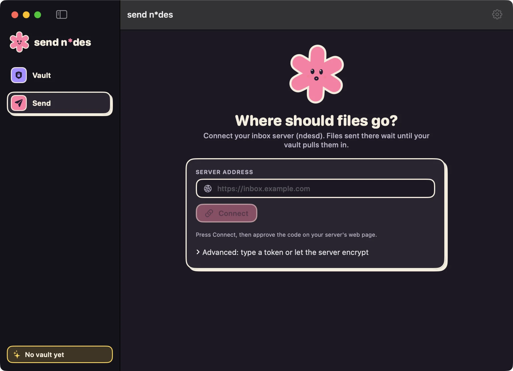
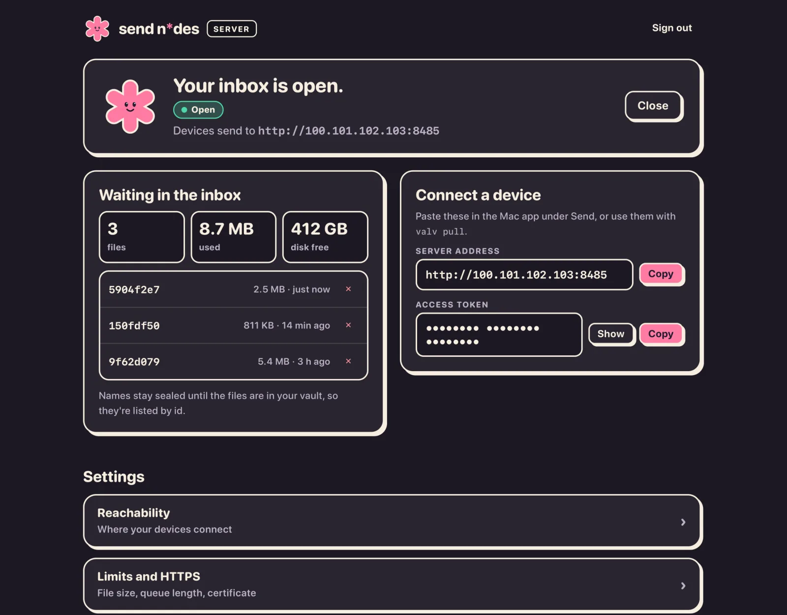
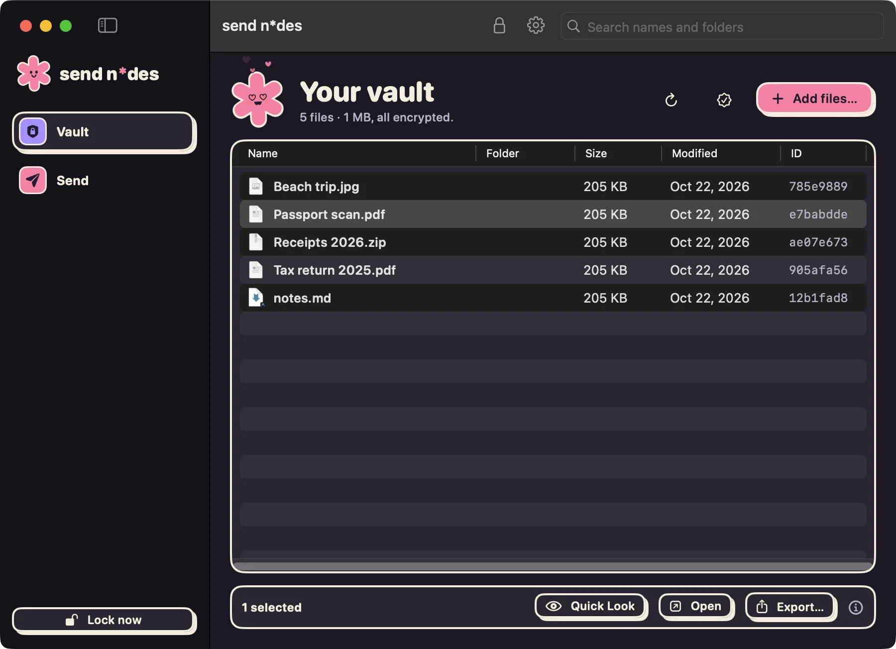
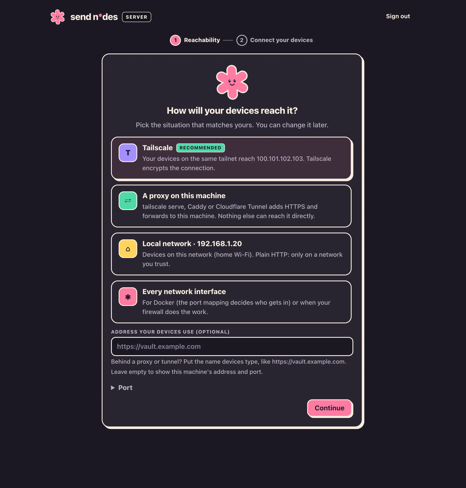
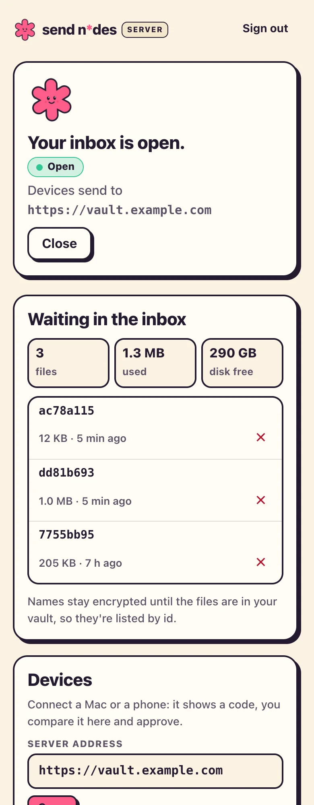

An encrypted vault that's just a folder, and a self-hosted inbox your devices send to. Your Mac seals every file before it leaves, your cloud stores ciphertext, and only your Mac can read the names again.
Who can read Passport scan.pdf at each step of the way. Scroll, and watch the label.
Drop it in the Send window.
Connect your inbox server once with an address and a token, then drag files onto the window. Sending works while your vault is locked, from any Mac you own, or anything that can make an HTTP request with the token.

The one-time step: address and token. After that, Send is a drop zone.
Your inbox only holds sealed files.
The inbox server holds your vault's public key and an upload secret. The Mac app seals each file on your Mac with those keys and uploads the sealed copy. Nothing the server holds can open that copy: not today's uploads, not last year's, not your vault.
Honest bit: sealing on your Mac needs the server keys pasted into the app (Settings → Server). Without them, and for scripts or curl that use the plain upload, the server sees the file in the clear while it seals it. Keep it on Tailscale or behind HTTPS either way.

The server's admin page, shown with example data.
Your cloud stores noise.
The vault is an ordinary folder: put it on a NAS, Google Drive, Dropbox or just your disk. File names, folder names and contents are all sealed, so your sync service sees random ids and sizes, nothing else.
The demo vault from the screenshots. The passport is 7755bb95…; Drive has no way to know that.
Unlock, and it's home. By name.
When you unlock the vault on your Mac, it checks the inbox, brings new files in and tags them new. Press Space for Quick Look, export a copy when you need one. Lock the Mac and the vault locks with it.

The demo vault, with the passport selected. Files that just came in from the inbox also carry a new tag.
Two small apps. One job each.
The Mac app
Your vault, with the boring parts handled.
Touch ID unlock, or your passphrase. Switch between vaults from the lock screen.
Locks itself after inactivity, and at once when the Mac sleeps, the screen locks or you switch user.
Quick Look and export, with decrypted copies kept in a private folder that's emptied on lock.
A recovery key you'll actually keep: shown once, and you prove you wrote it down.
Guided setup: claim it, paste your vault's keys, pick how devices reach it, send a test file.
Made for Tailscale, and happy behind tailscale serve, Caddy or a Cloudflare Tunnel.
Can't read your vault. It holds a public key and an upload secret, never your passphrase.
One Docker image: ghcr.io/klppl/sendndes. The admin page only answers your own network.
Works on your phone, light or dark.


Example data
What it protects. And what it doesn't.
Security tools oversell. This is the whole receipt.
Sealed
File contents
File names
Folder structure
Any tampering, detected
The host can see
How many files
Their rough sizes
When they changed
Not protected
Malware on an unlocked Mac
A weak passphrase
Losing the passphrase and the recovery key
A host deleting or rolling back files
Argon2id · ChaCha20-Poly1305 · X25519 · HKDF-SHA256Read the spec
Made by machines, for one person. Designed and written by AI, reviewed by other AI, and cross-checked by three independent implementations that agree byte for byte. No human has audited it and none is planned: it exists to satisfy its creator, not to earn your trust. In the end everything is entropy, ciphertext included. Keep a plaintext backup of anything you can't lose.
Up in three commands.
Run the inbox on any Linux box with Docker. Open its admin page on that machine (or over an SSH tunnel) and it walks you through the rest, then tells you when your first file arrives.
Build the Mac app from the same repo with scripts/build-app.sh (macOS 14+, Apple silicon). Full guide in the README.
$ git clone https://github.com/klppl/sendndes && cd sendndes
$ docker compose up -d
$ docker compose logs ndesd # your one-time setup code# then browse to http://127.0.0.1:8080 on that machine (or over an SSH tunnel)